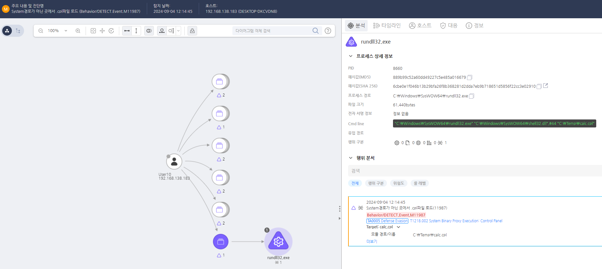

MITRE ATT&CK 액션을 기준으로 대응 방안을 작성
control.exe의 자식 프로세스로 rundll32.exe가 생성되고 rundll32.exe의 커맨드에서 시스템 경로가 아닌 곳에서의 cpl 실행 커맨드를 탐지한다.

의심스러운 ".cpl" 파일의 실행을 차단한다.
CPL 파일 실행 제한 (M1042 - Disable or Remove Feature or Program)
rundll32.exe shell32.dll,Control_RunDLL 명령어 제한 rundll32.exe 실행 모니터링 및 차단 (M1047 - System Logging & Monitoring & M1038 - Execution Prevention)
rundll32.exe 실행 탐지 및 차단 의심스러운 CPL 파일 다운로드 및 실행 차단 (M1031 - Network Segmentation & M1036 - Account Use Policies)
사용자 계정 및 권한 관리 강화 (M1026 - Privileged Account Management)
사용자 교육 및 인식 강화 (M1019 - Awareness and Training)
Action 실행시 함께 영향을 받는 다른 Techniqes
| ATT&CK |
|---|
| T1218.002 |
| D3FEND |
|---|
| D3-PM Platform Monitoring |
| D3-ITF Inbound Traffic Filtering |
| D3-NTA Network Traffic Analysis |